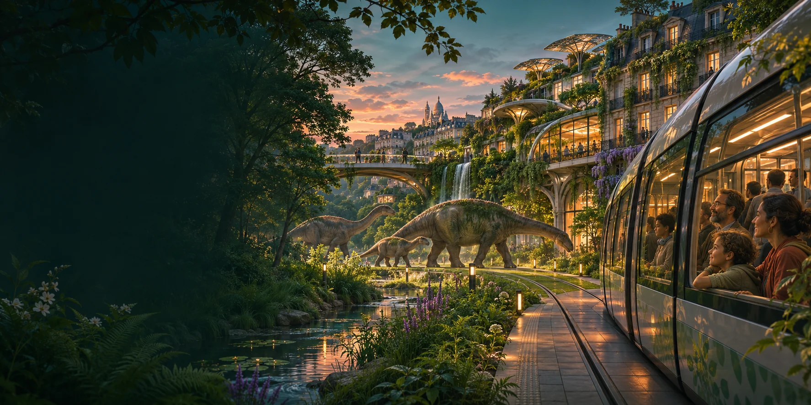

01MATINÉE ORDINAIRE
Le tram attend.
Personne ne s’étonne.
Un troupeau traverse le corridor écologique. Sur le quai, l’écran annonce un nouvel horaire. Les voyageurs reprennent leur conversation ; un enfant s’approche de la vitre pour suivre les silhouettes dans les hautes herbes.
Au-dessus des rails, passerelles, jardins et canaux dessinent le quartier. Une équipe vérifie les capteurs avant le passage du tram.
« Le train aura vingt minutes de retard : le couloir des mammouths est occupé. »